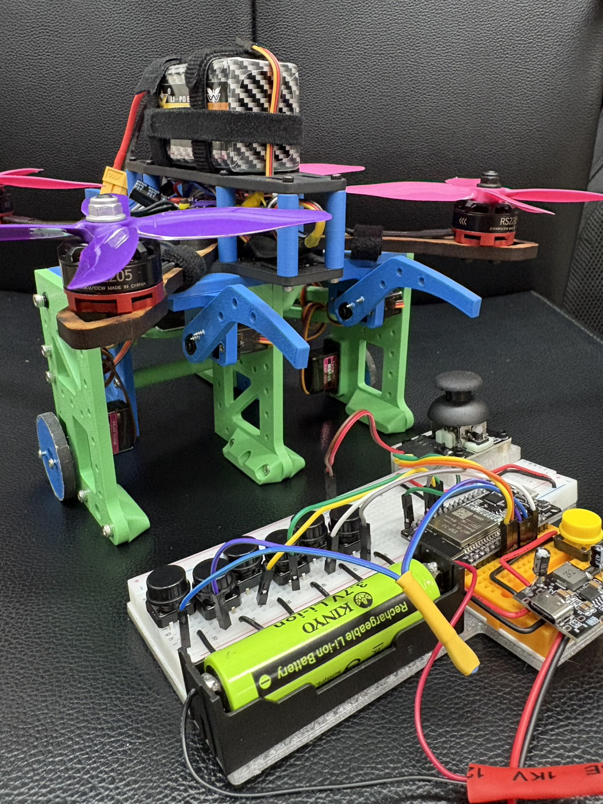
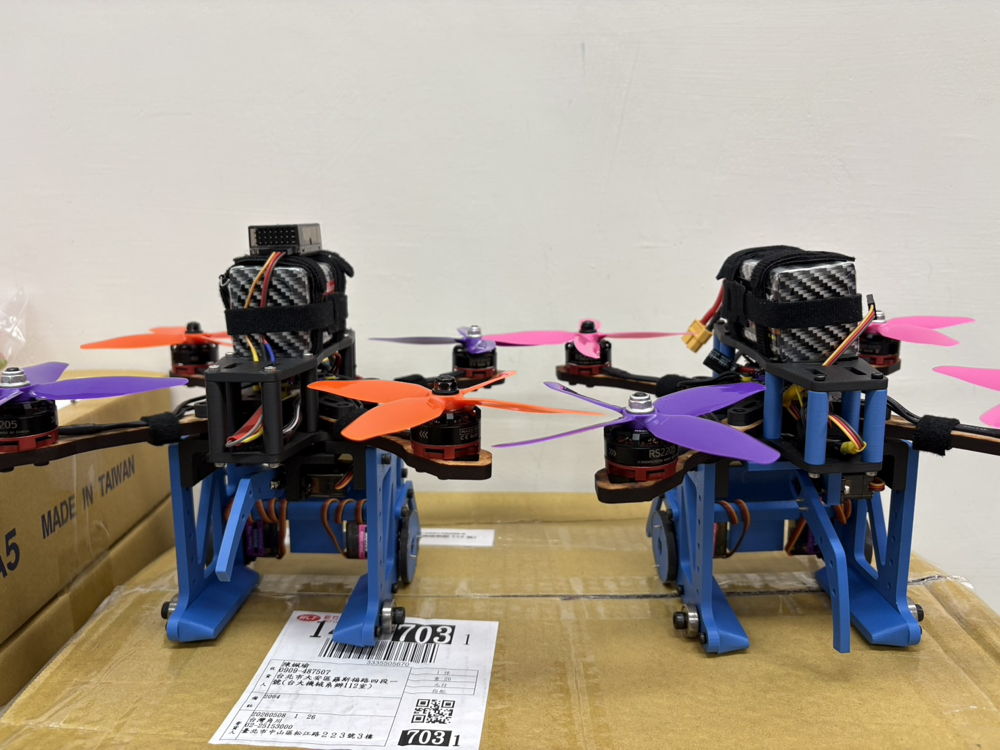

System Development
The course mission required a drone to move a ball from a lower platform to a higher platform. As team lead, I coordinated design, procurement, fabrication, testing, and final strategy. Our work included airframe design, ball-transfer mechanism ideation, electronic component selection, power calculations, thrust-to-throttle testing, and flight feasibility analysis.
Debugging and Risk Control
The most important engineering work happened during integration. We investigated motor behavior, flight controller signals, resonance, and structural effects that influenced stability. Because the final evaluation had only one formal attempt, we prepared spare assemblies, reviewed the rules in detail, and planned fallback strategies for likely failure modes.
Leadership Takeaways
- High-risk engineering tests need a schedule that leaves time for failure, not only assembly.
- Stable flight depends on mechanical structure, signal reliability, and tuning working together.
- A team lead must translate uncertain test data into clear next actions for the whole group.

